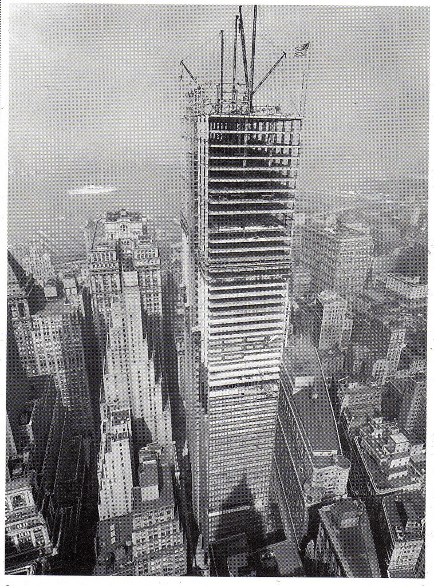

The steel skeleton for the Chase Manhattan Bank Building at One Chase Manhattan Plaza was topped out. View to west from Cities Services Building on 60 Wall Street, September 1959.
Photo: Unknown
Source: Nash, Eric P. “Manhattan Skyscrapers" (New York, Princeton Architectural Press, 1999).